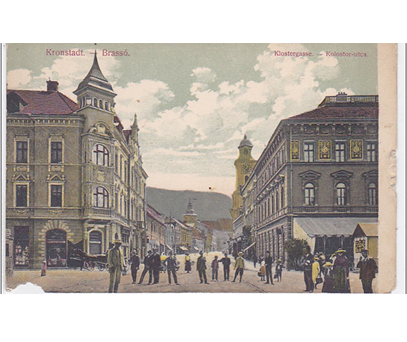
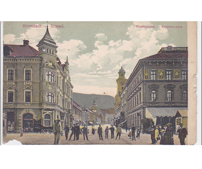
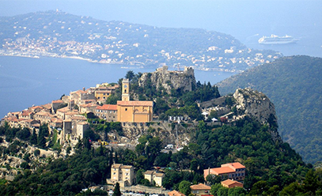
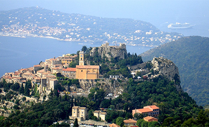

Despre Brassaï Halász Gyula
Brassaï (Halász Gyula)
S-a născut: 9 septembrie 1899 la Brasov(România)
 

A trăit la Brașov în anii 1900
A decedat: pe 8 iulie 1984. În Franța.
 

După abosolvirea „Școlii Reale” de la Brașov, Brassai a devenit studentul „Academiei de Arte Plastice” din Budapesta, iar după acesta a vizitat Berlinul și apoi Parisul.
Când a ajuns la Paris încă nu cunoștea tainele artei fotografice, dar a fost susținut de André Kertész (fotograf celebru de origine maghiară, născut la Budapesta în 1849).
Brassai sau Halász Gyula, pe numele său adevărat, pe lângă arta fotografică a fost interesat și de arte plastice și de scris. Articolele sale au fost publicate și în revista
brașoveană „Brassói Lapok” la începutul secolului 20. Împreună cu celebrul pictor Picasso a creat statui, iar filmul său intitulat „Până ce animale vor exista” a obținut un premiu important.
Prima sa cameră foto și-a cumpărat-o dintr-un împrumut și a fost un Bergheil-Voigtländer în format de 6×9. În Hotelul „Glacière”, unde locuia Brassai la Paris, și-a amenajat o cameră obscură pentru developarea pozelor făcute.
Printre temele preferate de către artist se număra viața cotidiană a Parisului, dar și portretele și pozele care înfățișeau reprezentanții de seamă ai societății pariziene de
la începutul secoului 20. În lucrările sale (mai ales în portrete) apar și prietenii săi, personalități de marcă a vieții aritstice precum pictorii Salvador Dali, Pablo Picasso sau Henri
Matisse, scriitorul Jean Genet sau poetul și pictorul de origine belgiană Henri Michaux.
Prietenul său, Henry Miller, l-a intitulat pe Brassai „ochiul Parisului”.
Brassai a avut o strânsă legătură de prietenie cu Pablo Picasso, celebrul pictorul permițându-și de nenumărate ori să glumească pe seama celebrului fotograf.
În anii ’30 deja renumitul Brassai face fotografii pentru reviste precum „Verve”, „Picture
Post”, „Lilliput”, „Coronet”, „Labyrinthe”, „Réalités”, „Plaisirs de France” și „Harper’s Bazaar”.
Începând cu anul 1961 Brassai se lasă de fotografiat și începe să creeze statui din piatră și bronz. În sediul UNESCO din Paris pictează o frescă de 7 x 3 metri.
Primește nenumărate premii și disctincții, de exemplu în 1947 primește decorațiunea de „Cavaler în Artă și literatură”, iar în 1976 este decorat „Cavaler de Onoare” al Franței.
În opinia scriitorului François Mauriac, laureat al premiului Nobel, Brassai este „cineva special". Nu poate fi comparat cu niciun fotograf: defapt el este pictor și sculptor, care a ales arta fotografică în loc de pictură și sculptură.”
Brassai: Cuplul din Paris (din bunăvoința Museului de Fotografie Maghiare)
Surse: Wikipedia, pixinfo.com, nona.net, brasovromania.net, blogspot.ro